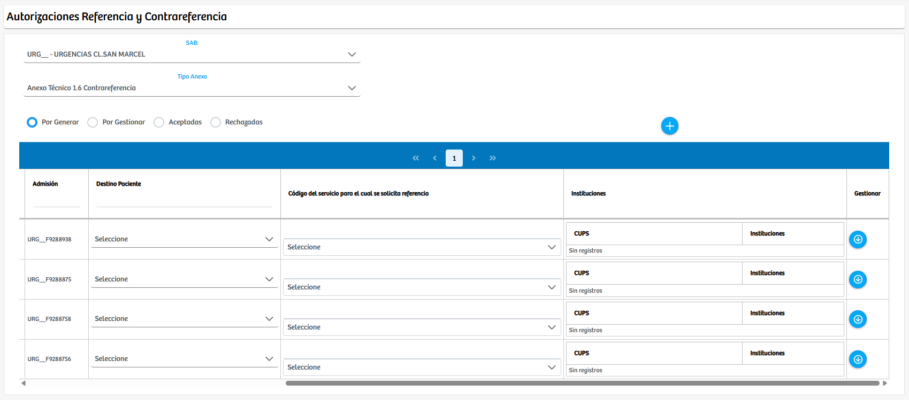
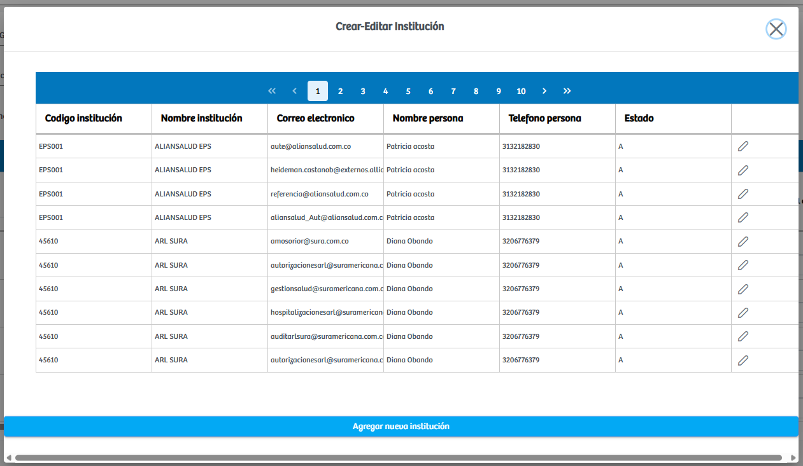

Modulos Sas-Web
Funcionalidades
Referencia - Contrareferencia
El módulo Referencia - Contrareferencia permite gestionar los procesos asociados al traslado asistencial del paciente entre instituciones, ya sea por solicitud de referencia o por la generación de la contrarreferencia correspondiente. Al ingresar, el sistema presenta dos selectores principales: el SAB, que determina la sede o punto de atención desde donde se está realizando la gestión, y el Tipo de Anexo, que define si el trámite corresponde a una referencia o a una contrarreferencia. Una vez seleccionadas estas opciones, la plataforma carga automáticamente todos los registros que cumplen con los criterios establecidos, organizándolos según su estado a través de los filtros disponibles: Por generar, Por gestionar, Aceptadas y Rechazadas. Esto permite al usuario visualizar únicamente los casos que requieren su intervención en cada etapa del proceso.
Para cada registro listado, el sistema despliega una serie de campos que deben ser completados antes de proceder con la gestión. Entre estos campos se encuentran el Destino del Paciente, que define la institución o entidad a la cual se solicita el traslado; el Código del servicio por el cual se solicita referencia, donde se selecciona el procedimiento o servicio que justifica la remisión; y la sección de Instituciones, que facilita la identificación de las IPS disponibles para atender la solicitud. Cada uno de estos elementos es indispensable para que el proceso pueda ser tramitado correctamente. Una vez diligenciados los campos obligatorios, el usuario puede continuar con la gestión del anexo mediante el botón de acción ubicado en la columna correspondiente, lo que permite avanzar a las etapas de revisión, validación o generación del documento técnico asociado al trámite.
Gracias a esta estructura, el módulo consolida todo el proceso de referencia y contrarreferencia en un entorno unificado que facilita la captura de información, la validación de criterios y la trazabilidad del caso clínico, asegurando que cada solicitud sea tramitada conforme a los lineamientos operativos y asistenciales establecidos.